01
Ornella
Orenoque Films
Largometraje
2026
Música original
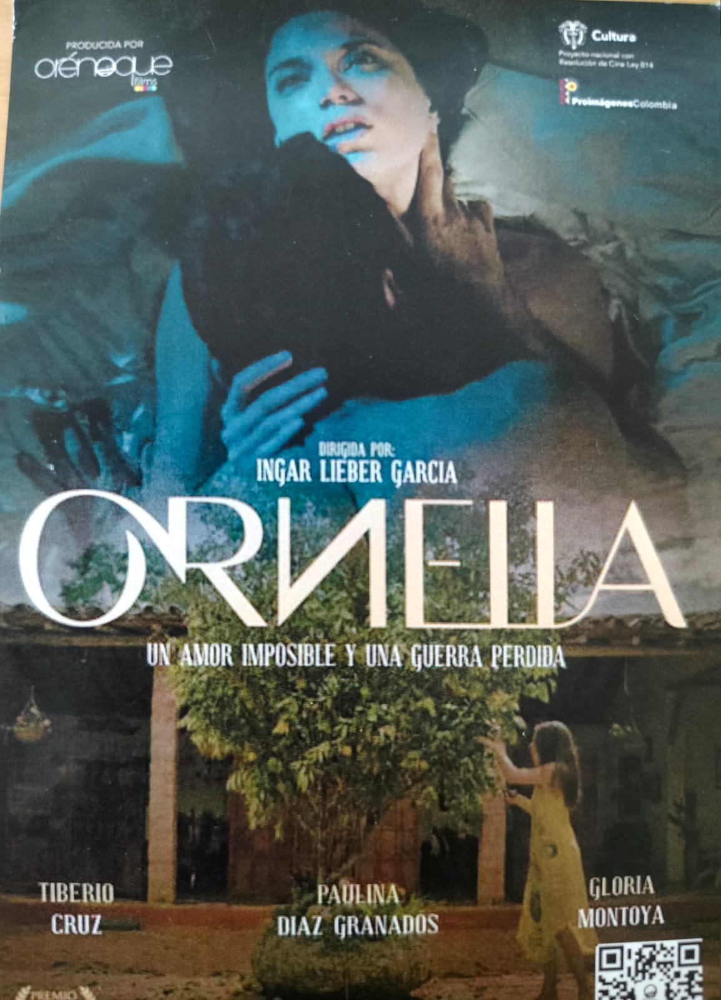
Un drama con tintes de thriller psicológico, sigue el regreso de un médico a su pueblo natal. La jóven esposa de su hermano desaparecido lo cautiva y lo atrapa en una vorágine de pasión y locura.
Dirección — Ingar Lieber García
Productora — Orenoque Films
Rol — Música original
02
Disidentes
Gravedad Inversa Producciones
Largometraje
2023
Música original
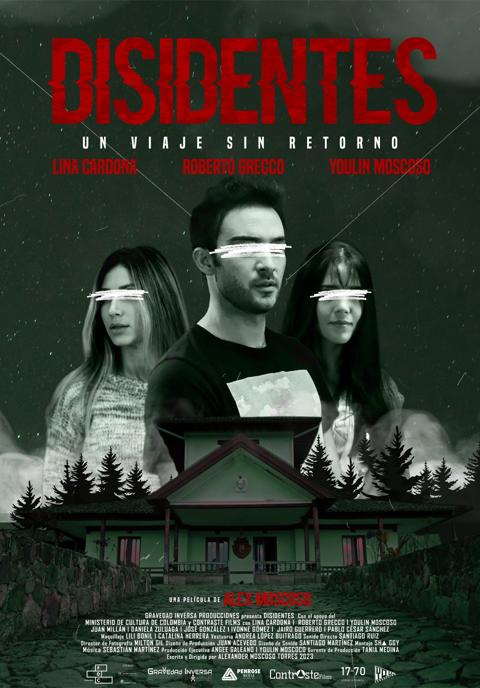
Un thriller que sigue a un grupo de jovenes atrapados en un viaje sin retorno.
Dirección — Alexander Moscoso Torres
Productora — Gravedad Inversa Producciones
Rol — Música original
03
Thanks Donald
Orenoque Films
Cortometraje
2025
Música original
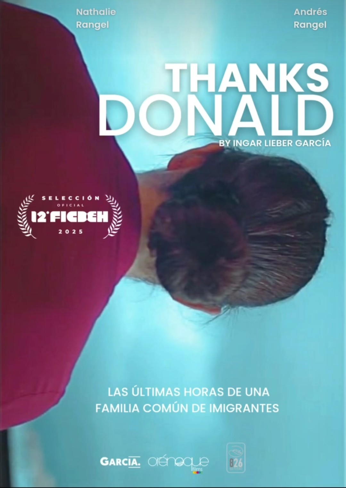
El drama de una familia común de inmigrantes en Estados Unidos. Selección oficial 12° FICBEH 2025.
Dirección — Ingar Lieber García
Productora — Orenoque Films
Rol — Música original
04
La fe del minero
LAP Productora
Documental
2023
Música original
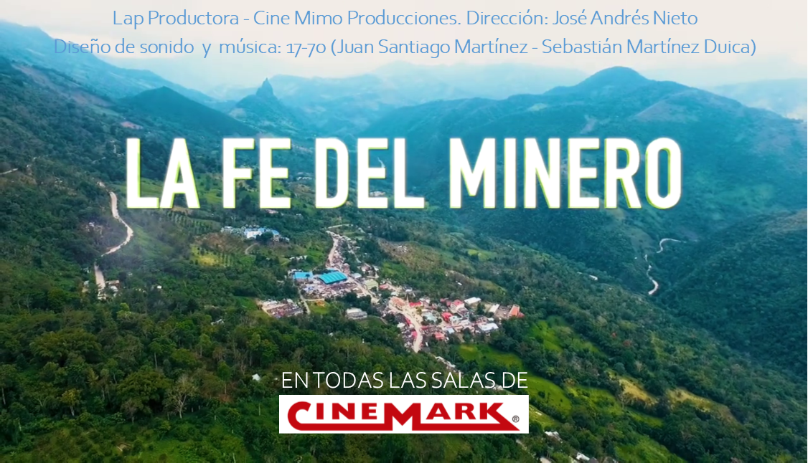
Documental estrenado en salas Cinemark de Colombia. Sigue la vida y sacrificio de los mineros de Boyacá, que dan su vida por el comercio de las esmeraldas
Dirección — José Andrés Nieto
Productora — LAP Productora / Cine Mimo Producciones
Rol — Música original y diseño sonoro
05
De abajo hacia arriba
La Virgen Films
Serie · TikTok
2025
Música original
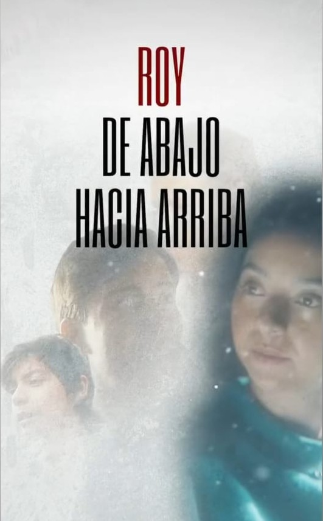
Serie de ficción para TikTok, basada en el libro "De abajo hacia arriba" de Ángel beccassino, cuenta la historia de vida de Roy, un joven soñador que se convierte en un hombre clave para la política colombiana.
Productora — La Virgen Films
Rol — Música original
06
Ocaso al medio día
Magenta 6-33
Cortometraje
2025
Música original
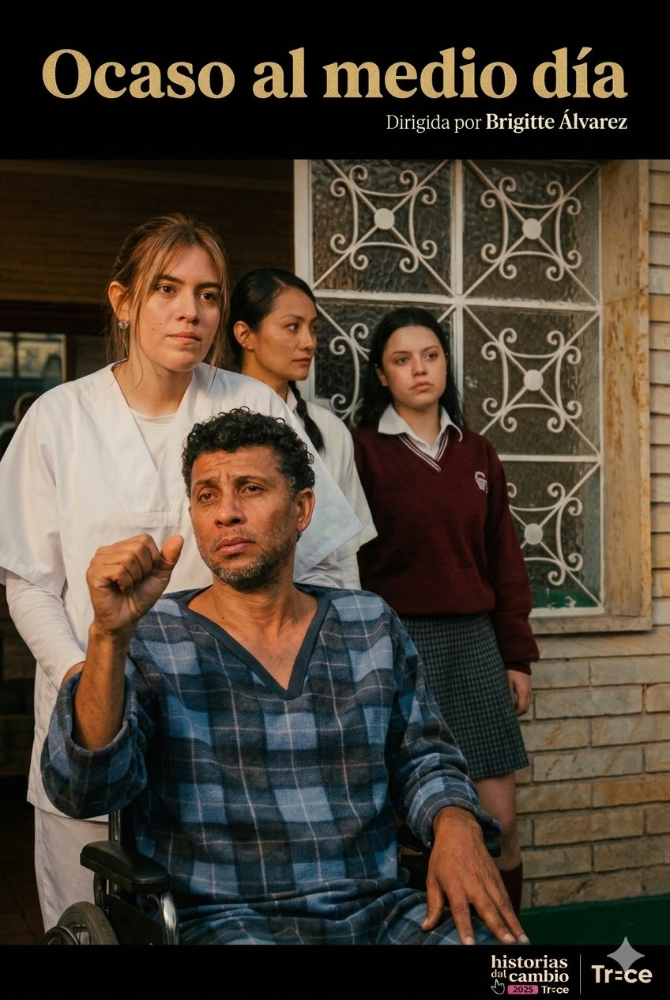
"Historias del Cambio", una convocatoria del Ministerio TIC de Colombia, en alianza con Canal Telecafé. Un padre de familia, una enfermedad y una reflexión profunda de la vida.
Dirección — Brigitte Álvarez
Productora — Magenta 6-33
Rol — Música original
07
Wakate
Orenoque Films
Spot publicitario
2025
Música original
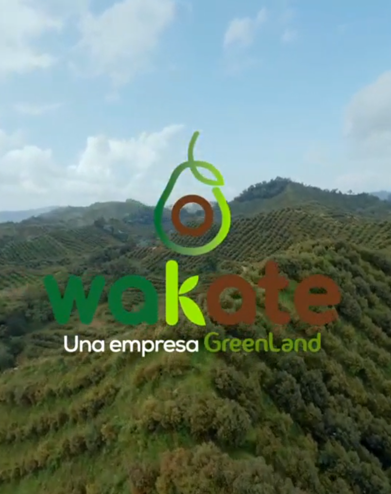
Spot publicitario para Wakate (Greenland).
Dirección — Ingar Lieber García
Productora — Orenoque Films
Rol — Música original
08
Preciosa Sangre
Ingar Lieber García
Cortometraje
2024
Música original
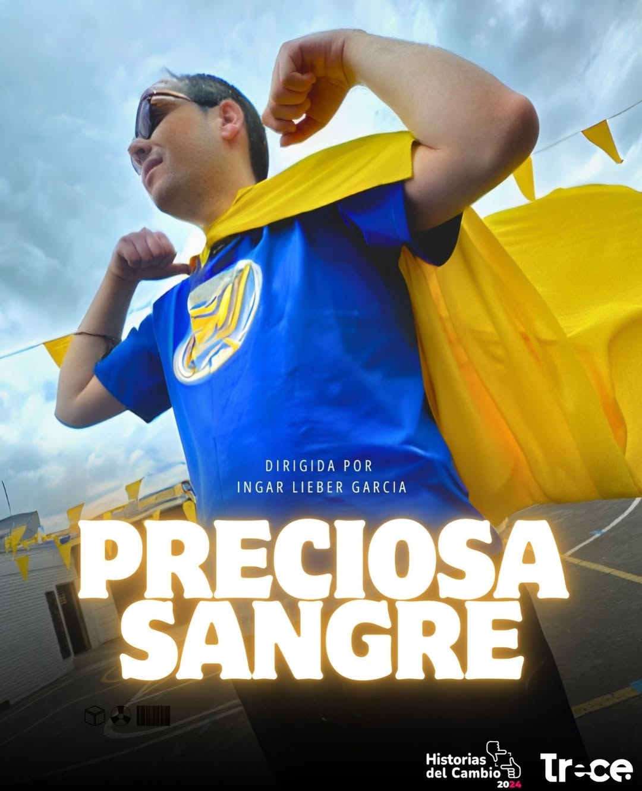
"Historias del Cambio", una convocatoria del Ministerio TIC de Colombia, en alianza con Canal Telecafé. Una gran lección para un joven problemático.
Dirección — Ingar Lieber García
Rol — Música original
09
Joseíto
Alejandra Villamizar
Cortometraje
2024
Música original
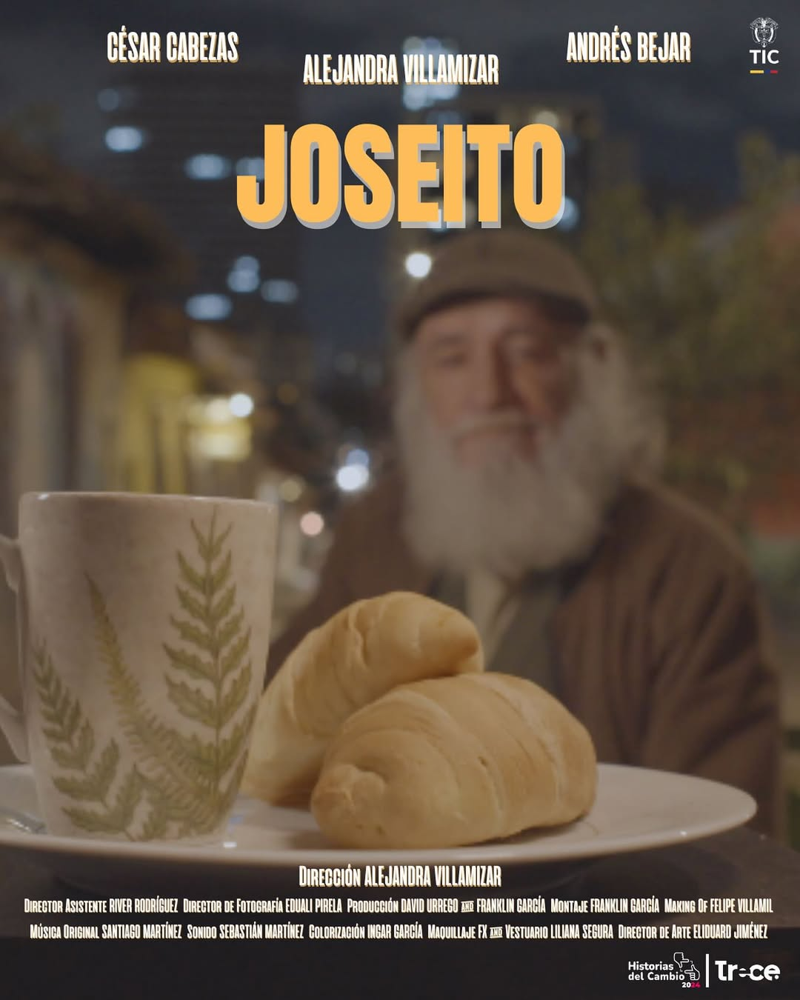
"Historias del Cambio", una convocatoria del Ministerio TIC de Colombia, en alianza con Canal Telecafé. La vejez, una búsqueda inesperada y un encuentro emotivo.
Rol — Música original
10
Suspiro de esperanza
River Rodriguez
Cortometraje
2024
Música original
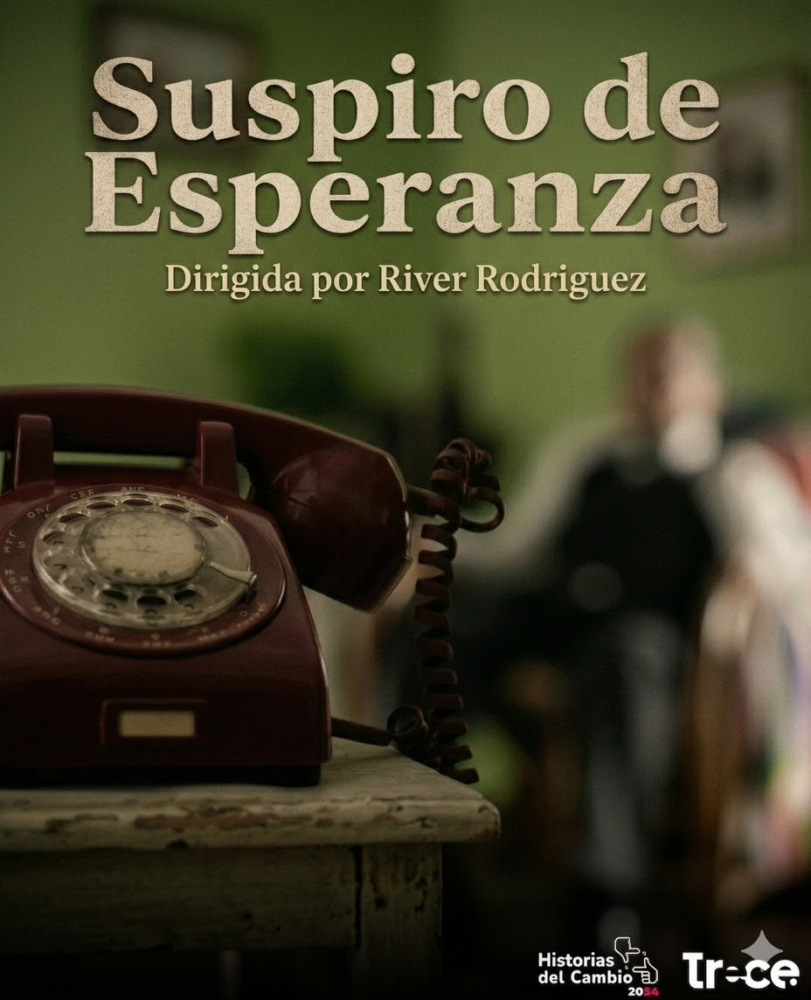
"Historias del Cambio", una convocatoria del Ministerio TIC de Colombia, en alianza con Canal Telecafé. La soledad, el abandono y la búsqueda de un mejor día a día para los residentes de un geriátrico.
Rol — Música original
11
Afammé
Orenoque Films
Cortometraje
2023
Música original
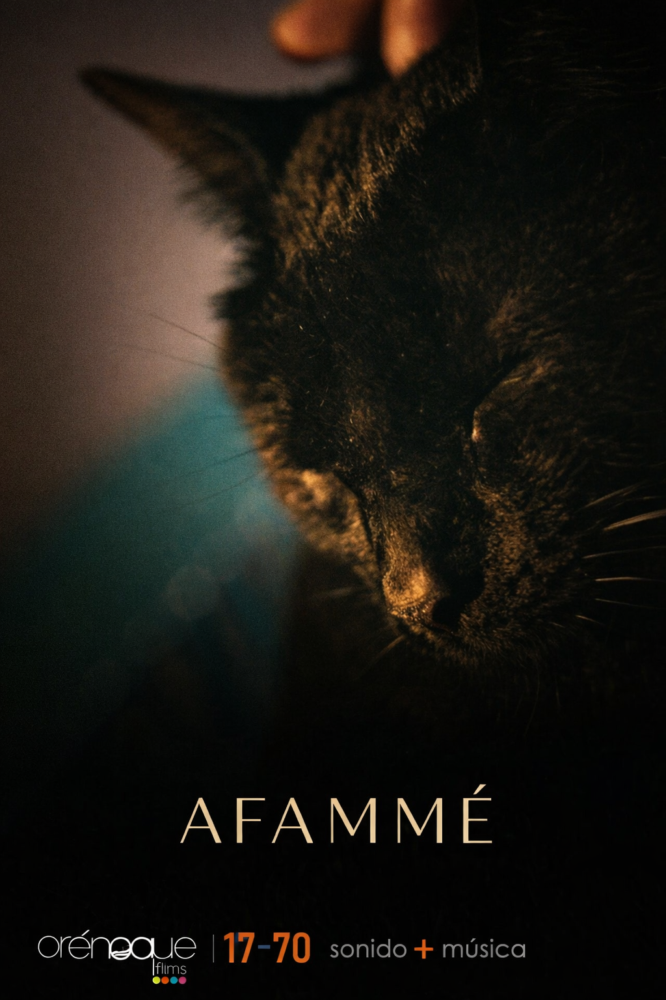
Thriller. Un hombre no es lo que parece ser.
Productora — Orenoque Films
Rol — Música original
12
ICBF
ICBF
Spot institucional
2021
Música original
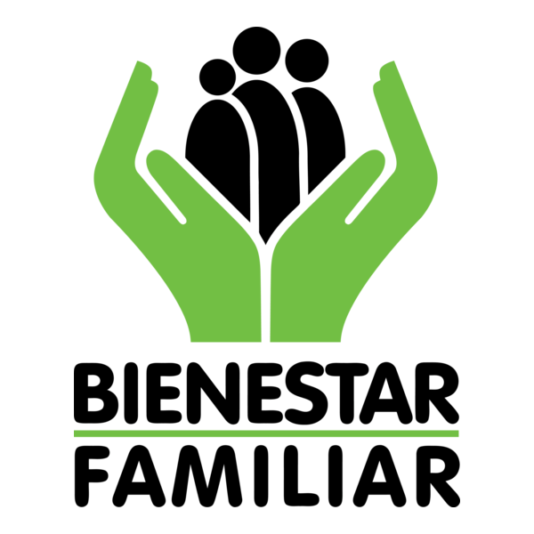
Spot tipo cortinilla para el Instituto Colombiano de Bienestar Familiar.
Cliente — ICBF
Rol — Música original
13
El hueco
Gravedad Inversa
Cortometraje
2020
Música original
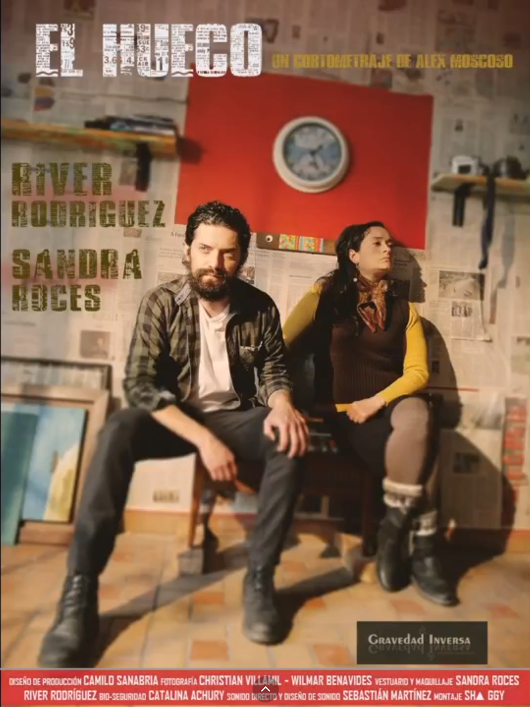
Un matrimonio se derrumba.
Dirección — Alex Moscoso
Productora — Gravedad Inversa
Rol — Música original
14
La culpa es de Alois
Orenoque Films
Cortometraje
2023
Música original
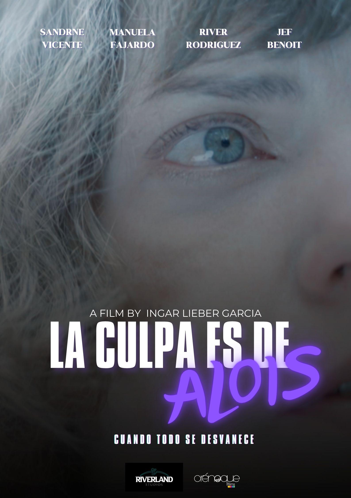
Un viaje, la montaña, la psique. Nominado a la selección oficial del Lisbon Film Rendezvous, ¡Viva Cortos! Festival y Sussex International Film Festival.
Dirección — Ingar Lieber García
Productora — Orenoque Films
Rol — Música original